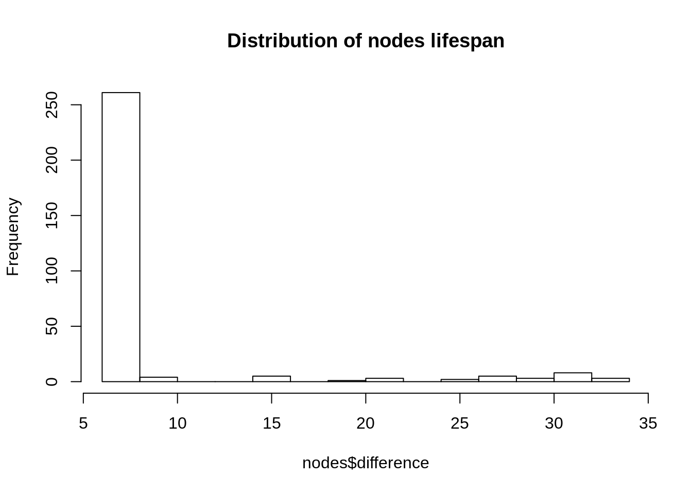

Chapter 13 Ephemeral
At this stage we’ve pretty much fully covered temporal graphs; nodes and edges appear over time on the graph. This already comes closer to reflecting reality if we assume that tweets are everlasting. In practice tweets have a life span; it is unlikely that old tweets from 2015 will be seen today. Therefore, on our graph, nodes and edges should appear then disappear after some time.
We will cover an alternative/better way to have a dynamic layout in the next chapter. However, this chapter will let you get some great intuition on how to use the twinetverse.
13.1 Collect
Let’s collect some tweets, just as we did previously.
# TK <- readRDS(file = "token.rds")
tweets <- search_tweets("#rstats filter:mentions", n = 200, token = TK, include_rts = FALSE)## Searching for tweets...## Finished collecting tweets!13.2 Build
Just as we did in the temporal chapter, we’ll pass created_at so that we know when tweets are created (when edges and nodes should appear), with one difference: we specify lifetime in our gt_dyn function.
We’ll also ease the work on our browser, constantly having to add and remove nodes and edges can be draining; we’ll round the time to the nearest hour.
library(dplyr)
net <- tweets %>%
mutate(
created_at = as.POSIXct(round(created_at, units = "hours"))
) %>%
gt_edges(screen_name, mentions_screen_name, created_at) %>%
gt_nodes() %>%
gt_dyn(lifetime = (60 * 60 * 6)) %>%
gt_collect()The lifetime argument takes milliseconds, above, we set it 60 * 60 * 6 which is equal to 6 hours. As you might expect, we will rescale the timeframe as we did before but here we set the lifetime of a tweet before doing so.
So logically, if we take the difference between the appearance and the disappearance of an edge we should obtain 6 hours.
c(edges, nodes) %<-% net
edges$difference <- edges$end - edges$created_at
head(edges)## # A tibble: 6 x 6
## source target created_at n end difference
## <chr> <chr> <dttm> <int> <dttm> <time>
## 1 __m_per… globea… 2019-04-12 23:00:00 1 2019-04-13 05:00:00 6 hours
## 2 __m_per… tom_ca… 2019-04-12 23:00:00 1 2019-04-13 05:00:00 6 hours
## 3 _colinf… tarask… 2019-04-12 18:00:00 1 2019-04-13 00:00:00 6 hours
## 4 _colinf… vincen… 2019-04-12 18:00:00 1 2019-04-13 00:00:00 6 hours
## 5 80data barryc… 2019-04-13 02:00:00 1 2019-04-13 08:00:00 6 hours
## 6 a1purva halfre… 2019-04-13 08:00:00 1 2019-04-13 14:00:00 6 hours| source | target | created_at | n | end | difference |
|---|---|---|---|---|---|
| __m_pereira | globeandmail | 2019-04-12 23:00:00 | 1 | 2019-04-13 05:00:00 | 6 hours |
| __m_pereira | tom_cardoso | 2019-04-12 23:00:00 | 1 | 2019-04-13 05:00:00 | 6 hours |
| _colinfay | taraskaduk | 2019-04-12 18:00:00 | 1 | 2019-04-13 00:00:00 | 6 hours |
| _colinfay | vincentguyader | 2019-04-12 18:00:00 | 1 | 2019-04-13 00:00:00 | 6 hours |
| 80data | barrycnyc | 2019-04-13 02:00:00 | 1 | 2019-04-13 08:00:00 | 6 hours |
| a1purva | halfrebel | 2019-04-13 08:00:00 | 1 | 2019-04-13 14:00:00 | 6 hours |
But how would this apply to nodes? Let’s plot the distribution of the lifespans of nodes (in milliseconds): the difference between their appearance and disappearance.
nodes$difference <- as.numeric(nodes$end - nodes$start)
hist(
main = "Distribution of nodes lifespan",
nodes$difference
)
We see that, unlike edges nodes are not all present on the graph for the same amount of time (6 hours for edges). There is a simple reason for it. If a user has tweeted at two (or more) different times in our dataset it will be present the from its first tweet to its second tweet (+ 6 hours).
13.3 Visualise
To tackle the visualisation let’s bring back our rescaling functio though we will tweak it this time around because we need more precision as we add and drop nodes and edges which sit in different data frames. If we were to rescaling using the local miinimum and maximum the two tables no longer be in sync. Therefore we use the same minimum and maximum to rescale both the nodes and edges.
As a reminder this is so that the nodes do not take 1.26 to come and go but rather 60 seconds (60,000 milliseconds) as specified by the t argument.
#' @param x Date time column.
#' @param t Number of milliseconds to rescale to.
rescale <- function(x, min, max, t){
x <- (x - as.numeric(min)) / (as.numeric(max) - as.numeric(min))
x <- x * t
x <- x + 600
return(x)
}Then onto preparing the data. We do something somewhat similar to what we did previously expect we also rescale end. There was no need to do that before as there was no need to do that since nodes and edges were only appearing on the graph and not disappearing.
Here is the logic we apply to rescaling both nodes and edges:
- Convert the date time (
POSIXct) to numeric. - We can then compute the minimum (see point 3 for explanation).
- Since the converted numeric return the number of milliseconds since the January 1st, 1970, we can remove the minimum number of milliseconds from the start time, i.e.:
start - min. - Then we can compute our minimum and maximum milliseconds for the rescaling function.
- Finally we use our rescale function passing the minimum and maximum computed at point 4.
You will notice that we remove 100 milliseconds from the nodes appearance and add 400 to the node disappearance. This is to ensure that the node is present at the time any edge connected to is created, similarly, we want to make sure nodes still exist when we drop edges, so we add 400 ms to the end time.
SCALE <- 30000 # 60 seconds
nodes <- nodes %>%
nodes2sg() %>%
ungroup() %>%
mutate(
start = as.numeric(start), # 1
end = as.numeric(end), # 1
min = min(start), # 2
start = start - min, # 3
end = end - min # 3
)
edges <- edges %>%
mutate(
id = 1:n(),
created_at = as.numeric(created_at), # 1
end = as.numeric(end), # 1
min = min(created_at), # 2
created_at = created_at - min, # 3
end = end - min # 3
)
# 4
MIN <- min(edges$created_at, nodes$start)
MAX <- max(nodes$end, edges$end)
# 5
nodes <- nodes %>%
mutate(
start = rescale(start, MIN, MAX, SCALE) - 400,
end = rescale(end, MIN, MAX, SCALE) + 400
) %>%
select(id, label, size, start, end)
edges <- edges %>%
mutate(
created_at = rescale(created_at, MIN, MAX, SCALE),
end = rescale(end, MIN, MAX, SCALE)
) %>%
select(id, source, target, start = created_at, end)Finally onto the visualisation, we again use sg_drop_nodes and sg_drop_edges, but this time, as we want them to also disappear we also use sg_drop_nodes and sg_drop_edges. With regard to the latter functions, since we only need to remove them from the graph we just need to specify their respective ids.
Then again, we can specify the x and y coordinates as well as the color of the nodes whcih we’ll base on clusters in order to make the graph look better.
nodes <- sg_get_layout(nodes, edges)
nodes <- sg_get_cluster(
nodes,
edges,
colors = c(
"#0084b4",
"#00aced",
"#1dcaff",
"#c0deed"
)
)## Found # 82 clusterssigmajs() %>%
sg_add_nodes(nodes, start, id, label, size, color, x, y, cumsum = FALSE) %>%
sg_add_edges(edges, start, id, source, target, cumsum = FALSE) %>%
sg_drop_nodes(nodes, id, end, cumsum = FALSE) %>%
sg_drop_edges(edges, id, end, cumsum = FALSE) %>%
sg_button(
c(
"add_nodes",
"add_edges",
"drop_nodes",
"drop_edges"
),
"Launch"
)13.4 Dynamic layout
An issue you may observe has to do with the layout. The layout is calculated based on the full graph, but we never have the full graph on screen only a subgraph at every time step. A better way to layout the graph is to use a dynamic layout that adjusts to the visualisation as nodes and edges appear and disappear.
The forceAtlas2 layout algorithm does just that. However we cannot just launch the forceAtlas2 network as we would on a static graphs. We have to update it at regular intervals.
refresh <- data.frame(
delay = seq(1, 32000, by = 500)
)
sigmajs() %>%
sg_add_nodes(nodes, start, id, label, size, color, cumsum = FALSE) %>%
sg_add_edges(edges, start, id, source, target, cumsum = FALSE) %>%
sg_drop_nodes(nodes, id, end, cumsum = FALSE) %>%
sg_drop_edges(edges, id, end, cumsum = FALSE) %>%
sg_force_start() %>%
sg_force_restart(refresh, delay) %>%
sg_button(
c(
"add_nodes",
"add_edges",
"drop_nodes",
"drop_edges",
"force_start"
),
"Launch"
)The reason the graph above is not running smoothly despite only showing a few tweets at a time is that it depends on some internal JavaScript functions pertaining to sigmajs that actually add nodes and edges one by one. Even though we update the graph (with sg_force_restart) only so often the browser is quickly overwhelmed by the amount of operations it has to run.
We will learn more about that and remedy to it in the next chapter.